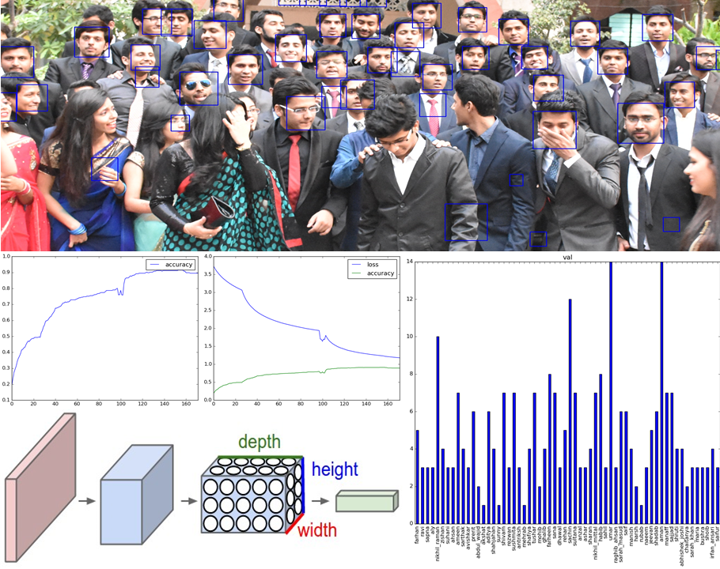
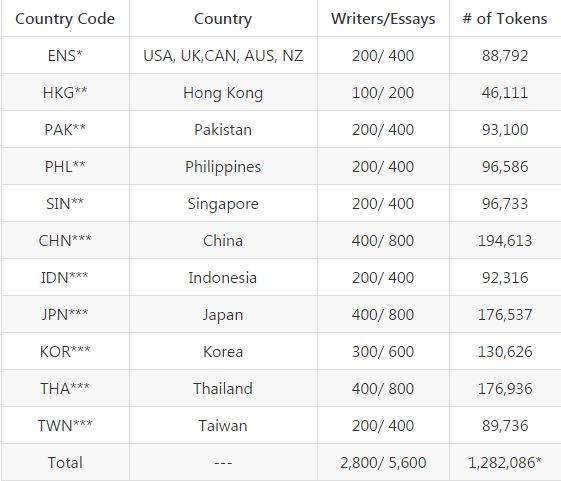
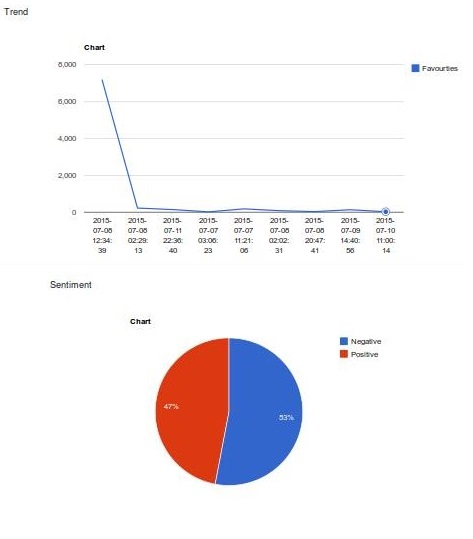
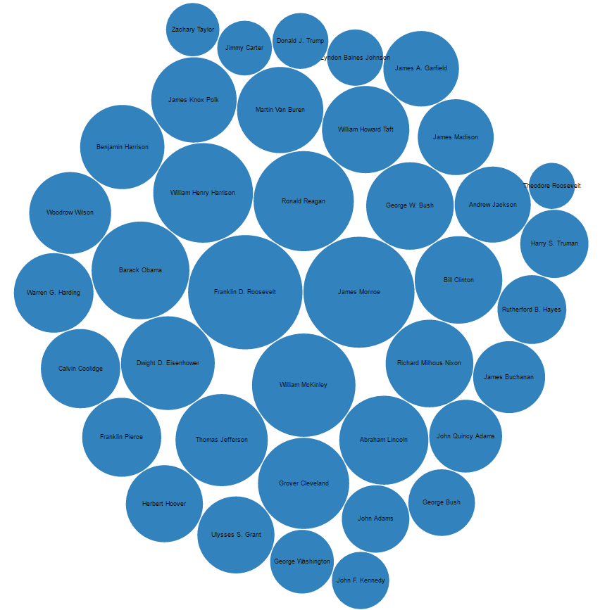
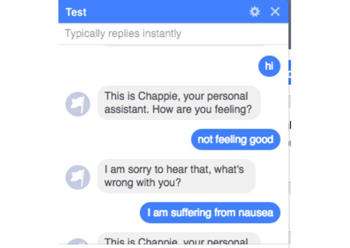
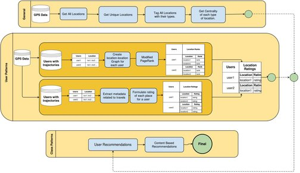

Since June 2018
Programmer Analyst
Sam's Club, Walmart, Inc.: Current Employer. Working on a completely new project related to Wholesale Trading.
Summer 2017
Data Science Intern
JM Family Enterprises, Inc.: Worked on analysis of sentiment, developed Lesk Based Classifier.
2016 - 2018
University of Texas at Dallas: Master's Degree
Intelligent Systems, Data Science
Summer 2015
Internship - Data Science
Sopra, India: Worked on analysis of sentiment, developed Lexicon Bayes Classifier.
2012 - 2016
Jamia Millia Islamia, India: Bachelor's Degree
Computer Science
About. As a diligent, hardworking and learning oriented individual, I create and accept challenges so that I can learn more than what is expected of me and push boundaries to achieve beyond the call of duty of the projects bestowed on me. I strive for excellence, and would work in an environment that will help me to enhance my skill-set and make meaningful contributions to areas of my expertise. I prize learning over performance, and welcome effort as a way to improve something that matters.
A Masters in Computer Science at the University of Texas at Dallas is a catalyst in teaching me the tools and techniques I need to know. A logical next step would be learning the industrial applications of these tools and concepts in order to complete the learning circle, so, I am actively seeking internship opportunities in:
- Intelligent Systems
- Data Science
- Data Analysis
- MachIne Learning
Publications
Comparison of Linear Learning methods in Click-Through Rate Prediction
This study examines the performance of some well-known statistical learning methods (linear and logistic) with respect to their efficiency in predicting the click through rate of an impression. Our observations led us to the conclusion that with minimal data preprocessing, linear models give competitive on-par results suited for most practical applications, where the learning method chosen should not be computationally expensive.
Antriksh Agarwal*, Avishkar Gupta*, Dr. Tanvir Ahmad
ICSCTI 2015 (Oral)
Projects

Auto Attendance Monitoring
A combination of detection and recognition on human faces for automatic attendance monitoring. I worked hard for this, but could not make it real-time, but I did implement the system enough for the face to be detected and recognised.

Classify Language
Every language has a different grammar pattern, and sometimes people mix the grammars while writing text in English. We would like to use this idea and extend our knowledge in machine learning and natural language processing to figure out if this is doable. Till date I have attempted to figure out what to do with these and have been experimenting using Weka.

Flaming Tribble
This was my Internship project in Sopra, India. I had to produce an analysis of sentiment from tweets extracted from twitter which was then parsed and sentiment words were extracted. The goal was to find trends and analyse what people thought about that particular trend, which could then be used to make videos relevant to current trends for more viewership.

Pacman Projects
The famous Pacman Projects developed for AI Course at UCBerkeley. I completed this as a part of my class, AI, at UTDallas, The class was taught by Dr. Vibhav Gogate. The original projects can be viewed
here.

Presidents Speak
I was trying to estimate which President of The United States of America used the maximum vocabulary in their speeches during the presidential inaugural speech. As can be seen in the above bubble chart Franklin D. Roosevelt used the maximum vocabulary whereas Theodore Roosevelt, Donald J. Trump, Zachary Taylor etc. are among those who used very few distinct words.

Tic-Tac-Toe-AI
More recently, I have taken a liking to develop games and then develop AI over those games against users playing. Just a start, let's see what comes along.
Hackathon Fun

Doctor Bot
Chat bot designed to make diagnosing illness easier. This conversational bot is named Hi Doc and comes with in-build state-of-art machine learning algorithms to detect diagnosis from symptoms. It also allows users to contact doctors, book appointments, and ask questions with the chat bot intended to speed up this process. Implemented in HackUTD 2017.

HyperDrive
What places would a user be interested in visiting, based on his travel history ? The trick was to use customer feedback in identifying significant places of interest. A hybrid of collaborative and content-based filtering gave the desired results. Also experimented with a modified version of PageRank and HITS algorithm for better performance over a graph of movement. Implemented in TiECon India, 2015.
Song
In a company, the collaboration of songs is difficult and the common songs playing might be frustrating at times. We devised a method to vote what songs everyone likes and the songs being played will then be based on the majority voting in the playlist. Songs can also be uploaded to the playlist. Implemented in AngelHack 2015.
Music
The idea was to implement a mood based song player. It was to identify moods and play the songs similar to that mood. A big one for a 24 hour hackathon, so we just were able to implement the sentiment analysis of songs into some sentiments. Also used a bluemix API to provide it an interface. Implemented in AngelHack 2015.
Fun Stuff
Python Tutorials (With Machine Learning and Django)
We were super excited about what we knew about machine learning and wanted sophomores and juniors to learn more about the language as well have some extra motivation to learn and create more. The tutorials included python basics, including lists, dictionaries, sets etc. and all that could be done using these. We tried to move on to Django and Machine learning, but stuck to Machine Learning and Django basics as they were just for motivation. Inspired by the Machine Learning course on coursera, I did also try to make assignments for them in order to keep them as interested with the subject as possible.
Antriksh Agarwal*, Zishan Ahmad*, Sarah Masud*, Shivam Rana*, Nikhil Mittal*